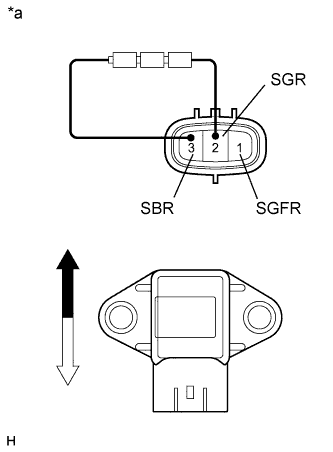

ПЕРЕДНИЙ ДАТЧИК ЗАМЕДЛЕНИЯ > ПРОВЕРКА |
| 1. ПРОВЕРЬТЕ ПЕРЕДНИЙ ДАТЧИК УСКОРЕНИЯ |
|  |
Соедините последовательно 3 сухих батареи 1,5 В.
Подсоедините положительный (+) вывод батарей к контакту 3 (SBR) датчика ускорения, а отрицательный (-) вывод – к контакту 2 (SGR). Затем измерьте напряжение между контактами 1 (SGFR) и 2 (SGR).
Измерьте напряжение в соответствии со значениями, приведенными в таблице.
| Контакты для подключения диагностического прибора | Датчик Режим | Заданные условия |
| 1 (SGFR) - 2 (SGR) | Датчик неподвижен | Приблизительно 2,0 - 2,5 В |
| Датчик наклонен | Изменяется в диапазоне примерно от 0,9 до 2,3 В |
| *a | Устройство с неподсоединенным жгутом проводов (передний датчик ускорения) |
 | Верх |
 | Низ |